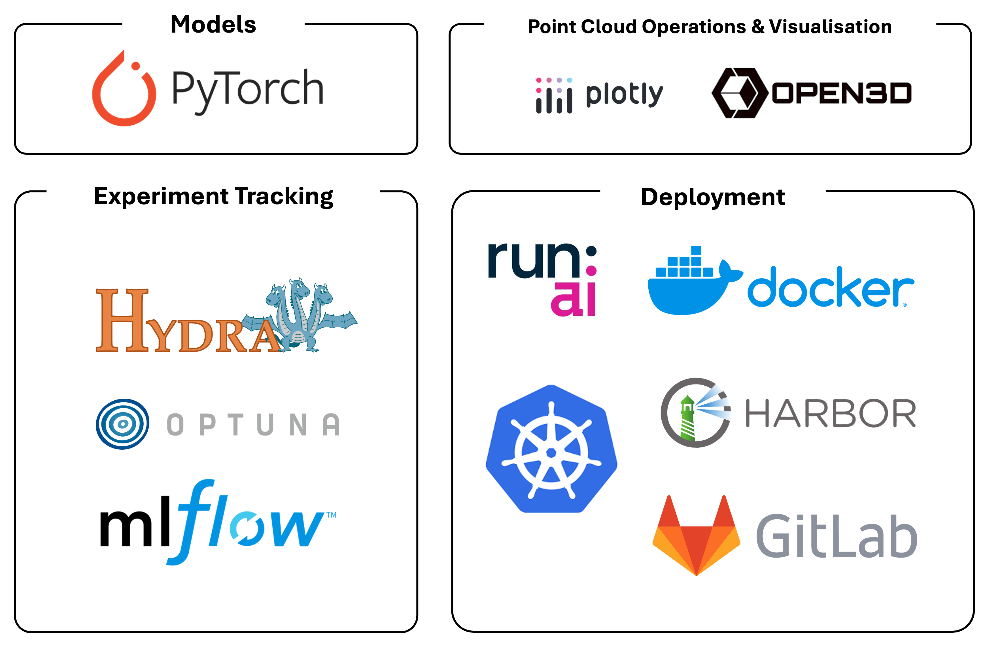

Project Description
A critical part of my journey as an AI Apprenticeship Program is my involvement in the 100E projects, where we get staffed on real industry projects in teams of three to four to help our clients build AI models to solve their business needs.
I was fortunate enough to be assigned to a 3D Computer Vision project that involves point cloud semantic segmentation of critical infrastructure components of the built environment. The project is currently ongoing and is scheduled to be completed by October 2024. The complexity of point cloud's spatial irregularity, as opposed to the orderly pixel grid in 2D images, makes it a challenging field to master. There is an increasing interest in models that make sense of point clouds as the use cases of LiDAR scanning technology grow.
Additionally, the objects that we have been tasked to identify have siginficantly more complex geometries than objects in many standard datasets used in research such as S3DIS and ScanNet. Therefore much of our work so far has been focused on finding ways to extract as much information from limited X,Y,Z,R,G,B data to boost model performance. This would go together with finding the perfect set of hyperparameters across different types of models.
Model Ecosystem
Our team did an extensive literature review to understand the work that has already been done in this field, and have classified the models we have encountered into three broad categories -- Point-based, Convolutional and Transformer. We are currently putting in place model pipelines for a select few models that we have identified and will be iterating through various feature engineering techniques as well as hyperparameters to produce the best results for the client.
Tech Stack

PyTorch DistributedDataParallel (DDP) was part of our tech stack to enable multi-GPU training.